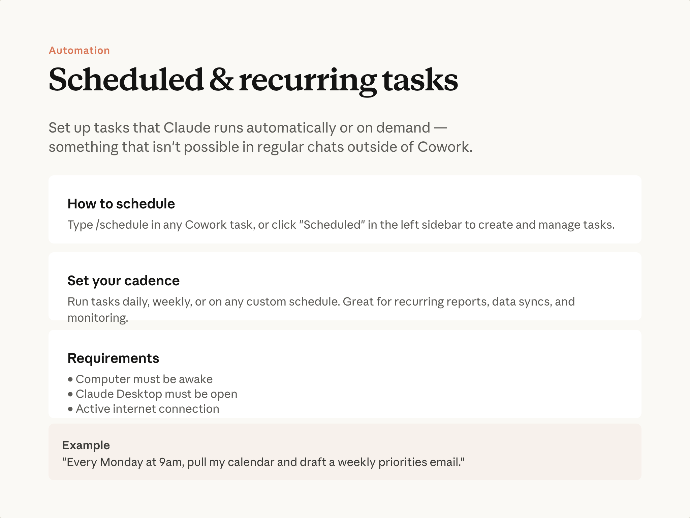

예상 소요 시간: 8분
학습 목표
이 레슨을 마치면 다음을 할 수 있습니다:
- 반복 주기로 작업을 실행하도록 예약된 작업 설정하기
- 앱이 닫혀 있거나 컴퓨터가 절전 상태일 때 예약된 작업이 어떻게 동작하는지 이해하기
반복 주기로 작업 실행하기

예약된 작업은 설정한 주기(매시간, 매일, 매주 또는 사용자 지정)에 따라 Cowork 작업을 자동으로 실행합니다. 작업은 무엇이든 가능합니다: 직접 작성한 프롬프트, 플러그인 스킬, 또는 다듬어 놓은 워크플로우. 잘 작동하는 것이 생기면, 매번 다시 프롬프트를 입력할 필요가 없습니다.
"매주 월요일 오전 9시에 내 캘린더를 가져와서 주간 우선순위 이메일 초안을 작성해 줘."
설정 방법
Cowork 대화에서
/schedule
을 입력하거나, 사이드바의 예약된 작업 영역을 사용하세요. Claude가 주기, 폴더, 출력 형식을 안내해 드립니다.
반복 실행되는 작업이므로 승인 단계가 있습니다. 승인 후에는 데스크톱 앱이 열려 있는 동안 작업이 자동으로 실행됩니다. 작업 예정 시간에 컴퓨터가 절전 상태이거나 앱이 닫혀 있었다면, Cowork는 복귀 즉시 작업을 실행하고 지연되었음을 알려드립니다.
프로젝트 내에서 예약된 작업을 생성하면, 해당 프로젝트의 다른 예약 작업들과 함께 표시됩니다—특정 작업에 대해 반복 실행 중인 모든 항목을 한눈에 확인할 수 있습니다.
예약된 작업 관리하기
예약된 작업 영역에서 과거 실행 내역을 검토하고, 지침이나 주기를 수정하고, 작업을 일시 중지하거나, 즉시 실행할 수 있습니다. 설정해 둔 커넥터와 플러그인도 예약된 작업에서 사용할 수 있습니다.
도움말 센터에서 예약된 작업에 대해 더 알아보기 .
자주 쓰이는 패턴
예약된 작업과 스킬은 자연스럽게 조합됩니다. 스킬은 무엇을 할지 정의하고, 예약된 작업은 언제 할지 결정합니다. 평일 오전 8시에 예약된 브리핑 스킬은 매일 아침 브리핑이 준비되어 있음을 의미합니다.
하지만 무언가를 예약하기 위해 반드시 스킬이 필요한 것은 아닙니다. 잘 작동하는 작업이라면 무엇이든 예약 대상이 됩니다.
직접 실천해 보기
현재 주기적으로 하는 작업을 떠올려 보세요—주간 현황 확인, 매일 폴더 점검, 반복 보고서 작성 등. 지금 당장 예약할 필요는 없습니다. 그냥 메모해 두세요: Cowork에서 한 번 성공적으로 실행하고 나면, 예약은 한 단계만 더 하면 됩니다.
다음 단계
다음 모듈에서는 파일 및 문서 작업, 대규모 리서치 및 분석 등 Cowork의 일반적인 활용 사례를 실제로 살펴봅니다.
피드백
피드백을 여기 에서 공유해 주세요.
저작권 및 라이선스
Copyright 2026 Anthropic. All rights reserved.